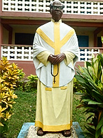
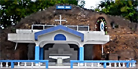

About the sanctuary
St. Mary's Sanctuary, Grotto-Buoho — a major Catholic pilgrimage site in Ghana’s Ashanti Region.

St. Mary's Sanctuary at Buoho (also called the Buoho Grotto) stands in the Afigya-Kwabre District of the Ashanti Region. It is a key place of pilgrimage for Catholics in Ghana and belongs today to the Catholic Diocese of Konongo-Mampong.
The late Very Rev. Fr. Daniel Tawiah Yesereh — the first Asante ordained to the Catholic priesthood — founded the sanctuary in 1949. After leading a pilgrimage to a grotto at Egyam near Takoradi in 1948, he sought a place of Marian prayer near Kumasi. Land near Buoho was given with the support of the Asantehene, and work began in March 1949 with the blessing of Bishop Hubert Paulissen.
Dedicated 12 November 1949
The grotto and Calvary were completed in about eight months and solemnly dedicated by Bishop Paulissen before a vast congregation.
Fr. Tawiah first set a resting place downhill, the Stations of the Cross, and an altar on the hilltop. Devotees of Our Lady formed the Pilgrims of Our Lady society. He preferred the name “Sanctuary” rather than “Shrine,” so the place would not be confused with a traditional shrine.
Since 1995, when the Kumasi Diocese was divided, Buoho has been under the Konongo-Mampong Diocese. The grounds have grown to include shelters for Mass, improved access for those who cannot climb the hill, a large church, hostel, canteen, and other facilities for pilgrims and retreatants.
Today the sanctuary hosts regular all-night vigils, Marian feasts, priestly and lay retreats, and the daily prayer of the people of God.



Our mission
To honour Our Lady, celebrate Christ in the Eucharist, and welcome every pilgrim to Grotto-Buoho with joy.